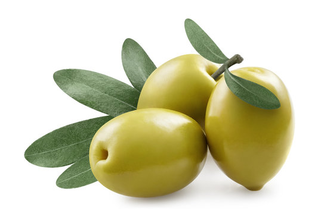

Freshness You Can Trust

Olive is a small, nutritious fruit that grows on olive trees and is widely known for its healthy fats and antioxidant properties. It is rich in vitamin E, iron, copper, calcium, and monounsaturated fats, which help support heart health, reduce inflammation, improve skin health, and strengthen the immune system. Olives are commonly eaten fresh, pickled, or used to produce olive oil, which is considered one of the healthiest cooking oils.